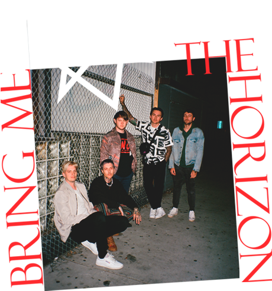

Bring Me The Horizon
Bring Me the Horizon adalah grup musik rock Inggris yang dibentuk di Sheffield
pada tahun 2004. Saat ini grup ini digawangi vokalis Oliver Sykes, gitaris Lee Malia,
bassis Matt Kean, drummer Matt Nicholls, dan kibordis Jordan Fish.
